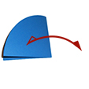
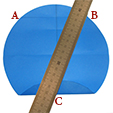

Poisson rond
Fabrication d'un poisson à partir d'un rond de papier. Une activité détente pour s'occuper et pour préparer un beau poisson d'avril.
1- Plier en deux le rond de papier , puis plier encore en deux avant de tout déplier

2- Rabattre le bas du rond vers le centre du rond en s'alignant bien sur le pli vertical. Appuyer simplement au milieu pour faire une marque à mi hauteur du demi-cercle. Déplier
3- Rabattre le bas du cercle vers la marque à mi-hauteur du demi cercle. Plier
4- Faire le même pli dans la moitié supérieure du rond de papier. marquer le pli et déplier
Repérer le point O centre du rond , le point A à l'extrémité gauche du pli du haut du cercle et B le point à l'extrémité droite du pli.
5- Plier le rond de papier le long de BC . Astuce : s'aider d'une règle plate , la poser à gauche des points B et C et rabattre la bande de papier à droite de la règle vers la gauche.

6- Pier la bande de papier le long de OC en la rabattant vers la droite (le pli s'arrête au niveau du centre O). Déplier
7- Pier la bande de papier le long de OB en la rabattant vers le bas à droite (le pli s'arrête au niveau du centre O). Déplier légèrement

8- Reformer en même temps les 2 plis OC et OB . Basculer progressivement le surplus de papier qui forme une boucle de papier vers la gauche pour l'aplatir le long du pli central.
9- Plier de la même manière le coté gauche.(étapes 5 à 8) : Plier le coté gauche vers la droite le long de AC Rabattre vers le bas gauche en ajustant le pli le long de OC , déplier. Plier le long de OA . Aplatir OA et OB et aplatir le surplus de papier vers la droite , le long du pli central
10 - Plier vers l'intérieur la pointe dépliage pour obtenir un triangle pour la queue du poisson.
11 - Arrondir la forme du poisson en rabattant sur 1 ou 2 cm les pointes A et B
12- Retourner. Coller des gommettes pour l'oeil du poisson

Le poisson est terminé il ne reste plus qu'à en faire d'autres!
2 Commentaires
Laisser un commentaire